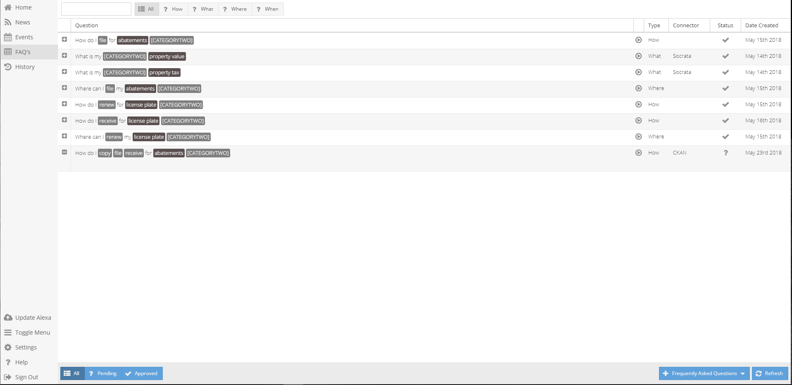

FAQs¶
This section was designed to best assist you to create and edit FAQs responses. Using values, created within the Slots section in Settings, you will identify the information your community members will be requesting. You will have the ability to type the response to the FAQ and connect any open source data to communicate.
Create Question and Answer¶
- Choose question type
- How | When | Where | What
- Fill out question template
- Select Office the question is addressing
- Select Verb - the action of the question (ex. Find, search, fill, apply ...ect.)
- Multiple verbs can be choosen, if fitting to question being established
- Select Category - subject of FAQ
- Second Category - select additional subcategory
Slots filled within the template give Alexa context to search for information
- Fill out Answer - FAQ Response
- Card Title - Title of display message (how to, where to, ...etc.)
- Voice Message - Type answer to FAQ to be spoken
- Display Message - Type answer to FAW that will be displayed
- Speak Text button allows Voice Messgae to be tested
- Approved
- Click box to make the answer to the FAQ available to your Alexa skill.
- If box is left unchecked the created response will be saved and can be edited.
Question will not be acknowledge by your skill until approved
- Click Add
- Surves as save button. Will add question and answer to FAQs, will not add to skill (approve check-box adds to skill).
Create Question and Answer - Pulling from Open Source¶
- Follow steps 1, 2, & 3 above, prior to checking Approved
- Connector - Select open source
- Api Endpoint - Input table/dataset
- Advanced Query - Select query needed to retrieve secified dataset
- Complete steps 4 & 5 above
Edit FAQ¶
- Double click desired FAQ
- Once changes are made, Click Update
Delete FAQ¶
- Double click desired FAQ
- Click delete button
- A toast will appear to verify you truly would like to delete FAQ
Features Within FAQs Grid¶
- Filter FAQs
- FAQ Types
- Click buttons located on top of grid or use search bar
- All | How | What | Where | When
- FAQ Status
- Click on buttons on the bottom right of grid
- All | Pending | Approved
- “+” button
- Expands view of each FAQ
- Play button
- Allows response to be heard